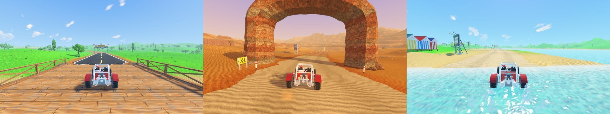

3D Buggy
An original 3D off-road arcade buggy racer. Race the clock across five stages of open country, collect flags, fly off ramps and find the hidden shortcuts — from a chase camera or a fully modelled cockpit.
Un jeu de course arcade 3D original en buggy tout-terrain. Battez le chrono sur cinq étapes en pleine nature, ramassez les drapeaux, décollez des tremplins et trouvez les raccourcis cachés — en vue poursuite ou depuis un cockpit entièrement modélisé.
ហ្គេមប្រណាំង buggy arcade 3D ក្រៅផ្លូវ ដែលជាស្នាដៃដើម។ ប្រណាំងប្រជែងនឹងពេលវេលាក្នុង 5 ដំណាក់កាលនៅទីវាលធំទូលាយ ប្រមូលទង់ លោតហោះពី ramps និងស្វែងរកផ្លូវកាត់សម្ងាត់ — ពីកាមេរ៉ាតាមពីក្រោយ ឬពីក្នុង cockpit ដែលត្រូវបានធ្វើគំរូ 3D យ៉ាងពេញលេញ។

Against the clock, off the road.
Each stage is a timed run through open country. The clock starts with the budget for the first leg, and every checkpoint adds time for the next one; run out and the race is over. Along the way, rows of flags, scoring gates, stars, time tokens, ramps and hidden shortcuts reward the driver who goes looking for them.
Flags, gates, stars and jumps chained within six seconds of each other build a combo multiplier, up to ×5 — until a crash or a recovery resets it. Big air scores by time and distance, with a bonus for a clean landing.
Five stages, three stars each.
| Stage | Scenery | Unlock |
|---|---|---|
| Green Hills | Farmland, wooden bridges, a ford, windmills, balloons | Open |
| Desert Run | Dunes, sandstone arches, an oil field, big ramps | 1 star |
| Alpine Circuit | A mountain pass, pine forest, chalets, a cable car | 3 stars |
| Coastal Adventure | Beaches, water crossings, a lighthouse, a pier | 5 stars |
| Forest Challenge | Narrow muddy tracks, fallen logs, giant trees | 8 stars |
Every stage has three challenges, and each one earned is a star: reach the finish, collect a set number of flags, and one test of its own — finish with at most one crash, spend 9 seconds in the air, finish with 12 seconds to spare, score 16,000 points, or take the hidden shortcut.
Built to be driven.
A real suspension
The buggy runs on its own vehicle simulation, not a generic physics engine: four sprung wheels with damping and anti-roll bars, tyre slip, and grip that changes across ten surfaces, from asphalt and gravel to sand, mud, snow and water.
Steering sized to grip
Full lock is matched to the grip under the front wheels, so cornering force grows in proportion to the input with no sudden kick. On the touch buttons, a tap is a correction and a hold is a full turn.
Two ways to watch
The chase camera follows the direction of travel, so slides read clearly, and lags in the air so jumps feel big. The cockpit view sits at the driver’s eyes, with a working steering wheel, gauges and the driver’s arms.
A garage to fill
Stars unlock the Comet at 4 and the Mammoth at 9, alongside the starting Scout. Credits earned on each run buy 8 paints, 4 wheel sets and 5 extras — light bar, spare wheel, rear wing, whip flag and bull bar.
How to drive.
| Action | Touch | Keyboard | Gamepad |
|---|---|---|---|
| Steer | Steering wheel, left/right buttons, floating joystick or tilt | Arrows / WASD | Left stick |
| Accelerate | Gas pedal | Up / W | Right trigger, A |
| Brake, reverse | Brake pedal (hold at a standstill to reverse) | Down / S, Space | Left trigger, B |
| Change view | Camera button | C | Y |
| Pause | Pause button | Esc | Start |
Size, opacity, side and the position of every touch control can be set in an edit mode; tilt can be calibrated and its sensitivity adjusted.
Contre la montre, hors des routes.
Chaque étape est une course chronométrée en pleine nature. Le chrono démarre avec le temps alloué à la première portion, et chaque point de contrôle ajoute du temps pour la suivante ; à zéro, la course s’arrête. En chemin, des rangées de drapeaux, des portes à points, des étoiles, des bonus de temps, des tremplins et des raccourcis cachés récompensent le pilote qui les cherche.
Drapeaux, portes, étoiles et sauts enchaînés à moins de six secondes d’écart font grimper un multiplicateur de combo, jusqu’à ×5 — jusqu’à ce qu’un accident ou une remise en piste le remette à zéro. Les grands sauts rapportent selon le temps en l’air et la distance, avec un bonus pour une réception propre.
Cinq étapes, trois étoiles chacune.
| Étape | Décor | Déblocage |
|---|---|---|
| Green Hills | Terres agricoles, ponts en bois, un gué, des moulins, des montgolfières | Ouverte |
| Desert Run | Dunes, arches de grès, un champ pétrolier, de grands tremplins | 1 étoile |
| Alpine Circuit | Un col de montagne, une forêt de pins, des chalets, un téléphérique | 3 étoiles |
| Coastal Adventure | Plages, passages à gué, un phare, une jetée | 5 étoiles |
| Forest Challenge | Pistes étroites et boueuses, troncs couchés, arbres géants | 8 étoiles |
Chaque étape propose trois défis, et chacun rapporte une étoile : franchir l’arrivée, ramasser un nombre donné de drapeaux, et une épreuve propre à l’étape — finir avec un accident au plus, passer 9 secondes en l’air, finir avec 12 secondes d’avance, marquer 16 000 points ou prendre le raccourci caché.
Fait pour être piloté.
Une vraie suspension
Le buggy repose sur sa propre simulation de véhicule, pas sur un moteur physique générique : quatre roues suspendues avec amortissement et barres antiroulis, glissement des pneus, et une adhérence qui varie sur dix surfaces, de l’asphalte et du gravier au sable, à la boue, à la neige et à l’eau.
Une direction à la mesure de l’adhérence
Le braquage maximal est calé sur l’adhérence sous les roues avant : la force en virage suit l’action du joueur, sans à-coup. Sur les boutons tactiles, un appui bref corrige la trajectoire et un appui long fait tourner à fond.
Deux façons de regarder
La caméra de poursuite suit la direction du mouvement, pour que les dérapages se lisent, et prend du retard en l’air pour que les sauts paraissent grands. La vue cockpit est à hauteur des yeux du pilote, avec volant, cadrans et bras du pilote animés.
Un garage à remplir
Les étoiles débloquent le Comet à 4 et le Mammoth à 9, en plus du Scout de départ. Les crédits gagnés à chaque course achètent 8 peintures, 4 jeux de jantes et 5 accessoires — rampe de phares, roue de secours, aileron, fanion et pare-buffle.
Comment piloter.
| Action | Tactile | Clavier | Manette |
|---|---|---|---|
| Diriger | Volant, boutons gauche/droite, joystick flottant ou inclinaison | Flèches / ZQSD | Stick gauche |
| Accélérer | Pédale d’accélérateur | Haut / Z | Gâchette droite, A |
| Freiner, reculer | Pédale de frein (maintenue à l’arrêt pour reculer) | Bas / S, Espace | Gâchette gauche, B |
| Changer de vue | Bouton caméra | C | Y |
| Pause | Bouton pause | Échap | Start |
La taille, l’opacité, le côté et la position de chaque commande tactile se règlent dans un mode d’édition ; l’inclinaison se calibre et sa sensibilité s’ajuste.
ប្រណាំងនឹងពេលវេលា នៅក្រៅផ្លូវ។
ដំណាក់កាលនីមួយៗជាការប្រណាំងកំណត់ពេល ឆ្លងកាត់ទីវាលធំទូលាយ។ នាឡិកាចាប់ផ្តើមជាមួយពេលវេលាដែលបានកំណត់សម្រាប់ផ្នែកដំបូង ហើយចំណុចត្រួតពិនិត្យនីមួយៗបន្ថែមពេលសម្រាប់ផ្នែកបន្ទាប់។ បើអស់ពេល ការប្រណាំងក៏បញ្ចប់។ នៅតាមផ្លូវ ជួរទង់ ទ្វារពិន្ទុ ផ្កាយ កាក់បន្ថែមពេល ramps និងផ្លូវកាត់សម្ងាត់ ផ្តល់រង្វាន់ដល់អ្នកបើកបរដែលខិតខំស្វែងរកវា។
ទង់ ទ្វារ ផ្កាយ និងការលោត ដែលភ្ជាប់គ្នាក្នុងចន្លោះមិនលើសពី 6 វិនាទី បង្កើនមេគុណ combo រហូតដល់ ×5 — រហូតដល់មានការបុក ឬការដាក់រថយន្តត្រឡប់ទៅលើផ្លូវវិញ ដែលធ្វើឱ្យវាត្រឡប់ទៅសូន្យ។ ការលោតខ្ពស់ទទួលបានពិន្ទុតាមរយៈពេលនៅលើអាកាស និងចម្ងាយ ព្រមទាំងពិន្ទុបន្ថែមសម្រាប់ការចុះចតដោយរលូន។
5 ដំណាក់កាល ដំណាក់កាលនីមួយៗមាន 3 ផ្កាយ។
| ដំណាក់កាល | ទេសភាព | ការដោះសោ |
|---|---|---|
| Green Hills | ដីស្រែចម្ការ ស្ពានឈើ កន្លែងឆ្លងទឹករាក់ កង្ហារខ្យល់ ប៉េងប៉ោងខ្យល់ក្តៅ | បើកស្រាប់ |
| Desert Run | ទួលខ្សាច់ ក្លោងទ្វារថ្មភក់ តំបន់អណ្តូងប្រេង ramps ធំៗ | 1 ផ្កាយ |
| Alpine Circuit | ច្រកភ្នំ ព្រៃស្រល់ ផ្ទះឈើលើភ្នំ រទេះខ្សែកាប | 3 ផ្កាយ |
| Coastal Adventure | ឆ្នេរខ្សាច់ កន្លែងឆ្លងកាត់ទឹក បង្គោលភ្លើងហ្វារ ស្ពានផែ | 5 ផ្កាយ |
| Forest Challenge | ផ្លូវតូចចង្អៀតពោរពេញដោយភក់ កំណាត់ឈើដួល ដើមឈើយក្ស | 8 ផ្កាយ |
ដំណាក់កាលនីមួយៗមានបញ្ហាប្រឈម 3 ហើយបញ្ហាប្រឈមនីមួយៗដែលសម្រេចបាន ផ្តល់ 1 ផ្កាយ៖ ទៅដល់ទីបញ្ចប់ ប្រមូលទង់ឱ្យបានចំនួនកំណត់ និងការសាកល្បងមួយដែលជារបស់ដំណាក់កាលនោះផ្ទាល់ — បញ្ចប់ដោយបុកមិនលើសពី 1 ដង នៅលើអាកាសបាន 9 វិនាទី បញ្ចប់ដោយនៅសល់ពេល 12 វិនាទី រកបាន 16,000 ពិន្ទុ ឬប្រើផ្លូវកាត់សម្ងាត់។
បង្កើតឡើងសម្រាប់ការបើកបរ។
ប្រព័ន្ធស្ពឹងពិតប្រាកដ
រថយន្ត buggy ដំណើរការលើការក្លែងធ្វើយានយន្តផ្ទាល់ខ្លួន មិនមែនលើម៉ាស៊ីនរូបវិទ្យាទូទៅទេ៖ កង់ 4 ដែលមានស្ពឹង ជាមួយឧបករណ៍បន្ថយរំញ័រ និងរបារប្រឆាំងការលំអៀង ការរអិលសំបកកង់ និងការចាប់ផ្លូវដែលប្រែប្រួលលើផ្ទៃ 10 ប្រភេទ ចាប់ពីផ្លូវកៅស៊ូ និងក្រួស រហូតដល់ខ្សាច់ ភក់ ព្រិល និងទឹក។
ចង្កូតដែលស្របតាមការចាប់ផ្លូវ
ការបង្វិលចង្កូតអតិបរមាត្រូវបានកំណត់ឱ្យស្របនឹងការចាប់ផ្លូវនៅក្រោមកង់មុខ ដូច្នេះកម្លាំងពេលបត់កើនឡើងសមាមាត្រនឹងការបញ្ជា ដោយគ្មានការរញ្ជួយភ្លាមៗ។ នៅលើប៊ូតុងប៉ះ ការប៉ះម្តងគឺជាការកែទិសបន្តិច ហើយការសង្កត់ជាប់គឺជាការបត់ចង្កូតអស់ទី។
មើលបាន 2 របៀប
កាមេរ៉ាតាមពីក្រោយធ្វើតាមទិសដៅនៃការធ្វើដំណើរ ដើម្បីឱ្យការរអិលមើលឃើញច្បាស់ ហើយយឺតបន្តិចពេលនៅលើអាកាស ដើម្បីឱ្យការលោតមើលទៅធំ។ ទិដ្ឋភាព cockpit ស្ថិតនៅកម្រិតភ្នែករបស់អ្នកបើកបរ ជាមួយចង្កូតដែលដំណើរការពិតប្រាកដ ផ្ទាំងនាឡិកាវាស់ និងដៃរបស់អ្នកបើកបរ។
បំពេញយានដ្ឋានរបស់អ្នក
ផ្កាយដោះសោ Comet នៅពេលមាន 4 ផ្កាយ និង Mammoth នៅពេលមាន 9 ផ្កាយ បន្ថែមលើ Scout ដែលមានតាំងពីដំបូង។ ក្រេឌីតដែលរកបានក្នុងការប្រណាំងនីមួយៗ អាចទិញពណ៌ថ្នាំ 8 ប្រភេទ កង់ 4 ឈុត និងគ្រឿងបន្ថែម 5 ប្រភេទ — របារភ្លើង កង់បម្រុង ស្លាបក្រោយ ទង់លើបង្គោលទន់ និងរបារការពារខាងមុខ។
របៀបបើកបរ។
| សកម្មភាព | ការប៉ះ | ក្តារចុច | Gamepad |
|---|---|---|---|
| បត់ចង្កូត | ចង្កូត ប៊ូតុងឆ្វេង/ស្តាំ joystick អណ្តែត ឬការផ្អៀងទូរស័ព្ទ | Arrows / WASD | Left stick |
| បង្កើនល្បឿន | ឈ្នាន់ហ្គាស | Up / W | Right trigger, A |
| ហ្វ្រាំង ថយក្រោយ | ឈ្នាន់ហ្វ្រាំង (សង្កត់ជាប់ពេលឈប់ ដើម្បីថយក្រោយ) | Down / S, Space | Left trigger, B |
| ប្តូរទិដ្ឋភាព | ប៊ូតុងកាមេរ៉ា | C | Y |
| ផ្អាក | ប៊ូតុងផ្អាក | Esc | Start |
ទំហំ ភាពស្រអាប់ ខាង (ឆ្វេង ឬស្តាំ) និងទីតាំងនៃប៊ូតុងបញ្ជាដោយប៉ះនីមួយៗ អាចកំណត់បានក្នុងរបៀបកែសម្រួល។ ការផ្អៀងទូរស័ព្ទអាចក្រិតតាមខ្នាតបាន ហើយកម្រិតភាពរសើបរបស់វាក៏អាចកែតម្រូវបានដែរ។
A look inside.Le jeu en images.ហ្គេមតាមរយៈរូបភាព។
How it is built.
| Engine | Godot 4.7 with GDScript and the Mobile (Vulkan) renderer. |
| Physics | A custom vehicle simulation at 60 Hz, drawn interpolated so 90/120 Hz screens stay smooth. |
| Assets | Models, textures, sounds and music are all generated by the project’s own code; the only outside asset is the Chakra Petch font (SIL Open Font License). |
| Tracks | Each stage is written as driving directions, then baked into terrain ahead of time, so the phone loads a stage in about 4 seconds. |
| Performance | Low, Medium, High and Ultra presets, picked from the GPU on first run, with adaptive resolution. A steady 60 fps at High on a Samsung Galaxy A56. |
| Tests | Headless unit tests, and play tests in which an autopilot drives full races. |
| Saves | The career is stored as JSON with a SHA-256 checksum and a backup copy. |
Comment c’est construit.
| Moteur | Godot 4.7, GDScript et moteur de rendu Mobile (Vulkan). |
| Physique | Une simulation de véhicule maison à 60 Hz, affichée par interpolation pour rester fluide sur les écrans 90/120 Hz. |
| Ressources | Modèles, textures, sons et musique sont tous générés par le code du projet ; seule la police Chakra Petch (licence SIL Open Font) vient de l’extérieur. |
| Circuits | Chaque étape est décrite comme un itinéraire, puis transformée à l’avance en terrain : le téléphone charge une étape en 4 secondes environ. |
| Performances | Préréglages Bas, Moyen, Haut et Ultra, choisis d’après le GPU au premier lancement, avec résolution adaptative. 60 images/s stables en Haut sur un Samsung Galaxy A56. |
| Tests | Tests unitaires exécutés sans affichage, et tests de jeu où un pilote automatique dispute des courses complètes. |
| Sauvegarde | La carrière est enregistrée en JSON avec une somme de contrôle SHA-256 et une copie de secours. |
របៀបដែលវាត្រូវបានបង្កើត។
| ម៉ាស៊ីនហ្គេម | Godot 4.7 ជាមួយ GDScript និងម៉ាស៊ីនបង្ហាញរូបភាព Mobile (Vulkan)។ |
| រូបវិទ្យា | ការក្លែងធ្វើយានយន្តផ្ទាល់ខ្លួនដំណើរការនៅ 60 Hz ហើយរូបភាពត្រូវបានគូរដោយការប៉ាន់ស្មានចន្លោះ ដើម្បីឱ្យអេក្រង់ 90/120 Hz នៅតែរលូន។ |
| ធនធាន | ម៉ូដែល វាយនភាព សំឡេង និងតន្ត្រីទាំងអស់ ត្រូវបានបង្កើតដោយកូដរបស់គម្រោងផ្ទាល់។ ធនធានតែមួយគត់ដែលមកពីខាងក្រៅ គឺពុម្ពអក្សរ Chakra Petch (SIL Open Font License)។ |
| ផ្លូវប្រណាំង | ដំណាក់កាលនីមួយៗត្រូវបានសរសេរជាការណែនាំផ្លូវបើកបរ បន្ទាប់មកត្រូវបានបំប្លែងទៅជាផ្ទៃដីជាមុន ដូច្នេះទូរស័ព្ទផ្ទុកដំណាក់កាលមួយក្នុងរយៈពេលប្រហែល 4 វិនាទី។ |
| ដំណើរការ | កម្រិតកំណត់ជាមុន Low, Medium, High និង Ultra ដែលត្រូវបានជ្រើសរើសតាម GPU នៅពេលបើកលើកដំបូង ជាមួយគុណភាពបង្ហាញដែលសម្របខ្លួនដោយស្វ័យប្រវត្តិ។ 60 fps ថេរនៅកម្រិត High លើ Samsung Galaxy A56។ |
| ការធ្វើតេស្ត | ការធ្វើតេស្តឯកតាដែលដំណើរការដោយគ្មានការបង្ហាញ និងការធ្វើតេស្តលេង ដែលប្រព័ន្ធបើកបរស្វ័យប្រវត្តិបើកបរការប្រណាំងពេញលេញ។ |
| ការរក្សាទុក | វឌ្ឍនភាពរបស់អ្នកលេងត្រូវបានរក្សាទុកជា JSON ជាមួយលេខផ្ទៀងផ្ទាត់ SHA-256 និងច្បាប់ចម្លងបម្រុង។ |